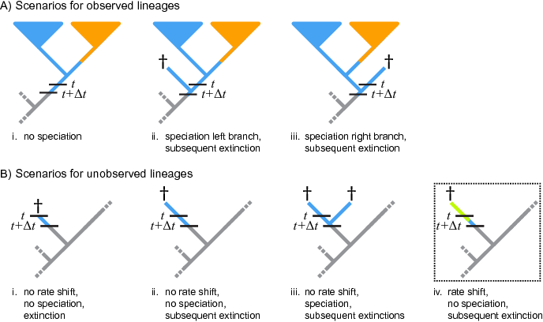

Required Software
For our tutorials we recommend that you download and install the latest release of ‘RevBayes‘ (Höhna et al. 2016), which is available for Mac OS X, Windows, and Linux operating systems. Directions for downloading and installing the software are available on the program webpage: http://revbayes.com. The exercises provided often also require additional programs for editing text files and visualizing output. The following are very useful tools for working with ‘RevBayes‘:- Some of the output can be automatically visualized using pre-made R functions provided by our R-package RevGadgets. You should make sure that you have a recent release of R and RevGadgets installed.
- A good text editor – if you do not already have one that you like, we recommend one that has features for syntax coloring, easy navigation between different files, line numbers, etc. Good options include Sublime Text, Atom or NotePad++, which are available for Mac OSX, Windows, and Linux.
- Tracer – for visualizing and assessing numerical parameter samples from ‘RevBayes‘
- IcyTree – a web-hosted phylogenetic tree visualization tool that is supported for Firefox or Google Chrome browsers
- FigTree – a tree visualization program
Overview: Diversification Rate Estimation
Models of speciation and extinction are fundamental to any phylogenetic analysis of macroevolutionary processes (e.g., divergence time estimation, diversification rate estimation, continuous and discrete trait evolution, and historical biogeography). First, a prior model describing the distribution of speciation events over time is critical to estimating phylogenies with branch lengths proportional to time. Second, stochastic branching models allow for inference of speciation and extinction rates. These inferences allow us to investigate key questions in evolutionary biology.
Diversification-rate parameters may be included as nuisance parameters
of other phylogenetic models—i.e., where
these diversification-rate parameters are not of direct interest. For
example, many methods for estimating species divergence times—such as
BEAST (Drummond et al. 2012),
MrBayes (Ronquist et al. 2012), and RevBayes
(Höhna et al. 2016)—implement relaxed-clock models' that include a
constant-rate birth-death branching process as a prior model on the
distribution of tree topologies and node ages. Although the parameters
of these tree priors’ are not typically of direct interest, they are
nevertheless estimated as part of the joint posterior probability
distribution of the relaxed-clock model, and so can be estimated simply
by querying the corresponding marginal posterior probability densities.
In fact, this may provide more robust estimates of the
diversification-rate parameters, as they accommodate uncertainty in the
other phylogenetic-model parameters (including the tree topology,
divergence-time estimates, and the other relaxed-clock model
parameters). More recent work,
e.g., (Heath et al. 2014), uses macroevolutionary
models (the fossilized birth-death process) to calibrate phylogenies and
thus to infer dated trees.
In these tutorials we focus on the different types of macroevolutionary models to study diversification processes and thus the diversification-rate parameters themselves. Nevertheless, these macroevolutionary models should be used for other evolutionary questions, when an appropriate prior distribution on the tree and divergence times is needed.
Types of Hypotheses for Estimating Diversification Rates
Many evolutionary phenomena entail differential rates of diversification (speciation – extinction); e.g., adaptive radiation, diversity-dependent diversification, key innovations, and mass extinction. The specific study questions regarding lineage diversification may be classified within three fundamental categories of inference problems. Admittedly, this classification scheme is somewhat arbitrary, but it is nevertheless useful, as it allows users to navigate the ever-increasing number of available phylogenetic methods. Below, we describe each of the fundamental questions regarding diversification rates.
(1) Diversification-rate through time estimation
What is the (constant) rate of diversification in my study group? The most basic models estimate parameters of the stochastic-branching process (i.e., rates of speciation and extinction, or composite parameters such as net-diversification and relative-extinction rates) under the assumption that rates have remained constant across lineages and through time; i.e., under a constant-rate birth-death stochastic-branching process model (Nee et al. 1994). Extensions to the (basic) constant-rate models include diversification-rate variation through time (missing reference). First, we might ask whether there is evidence of an episodic, tree-wide increase in diversification rates (associated with a sudden increase in speciation rate and/or decrease in extinction rate), as might occur during an episode of adaptive radiation. A second question asks whether there is evidence of a continuous/gradual decrease in diversification rates through time (associated with decreasing speciation rates and/or increasing extinction rates), as might occur because of diversity-dependent diversification (i.e., where competitive ecological interactions among the species of a growing tree decrease the opportunities for speciation and/or increase the probability of extinction, e.g., (Höhna 2014)). Third, we can ask whether changes in diversification rates are correlated with environmental factors, such as environmental CO~2~ or temperature (Condamine et al. 2013). A final question in this category asks whether our study tree was impacted by a mass-extinction event (where a large fraction of the standing species diversity is suddenly lost, e.g., (May et al. 2016)). The common theme of these studies is that the diversification process is tree-wide, that is, all lineages of the study group have the exact same rates at a given time.
(2) Diversification-rate variation across branches estimation
Is there evidence that diversification rates have varied significantly across the branches of my study group? Models have been developed to detect departures from rate constancy across lineages; these tests are analogous to methods that test for departures from a molecular clock—i.e., to assess whether substitution rates vary significantly across lineages (missing reference). These models are important for assessing whether a given tree violates the assumptions of rate homogeneity among lineages. Furthermore, these models are important to answer questions such as: What are the branch-specific diversification rates?; and Have there been significant diversification-rate shifts along branches in my study group, and if so, how many shifts, what magnitude of rate-shifts and along which branches?
(3) Character-dependent diversification-rate estimation
Are diversification rates correlated with some variable in my study group? Character-dependent diversification-rate models aim to identify overall correlations between diversification rates and organismal features (binary and multi-state discrete morphological traits, continuous morphological traits, geographic range, etc.). For example, one can hypothesize that a binary character, say if an organism is herbivorous/carnivorous or self-compatible/self-incompatible, impact the diversification rates. Then, if the organism is in state 0 (e.g., is herbivorous) it has a lower (or higher) diversification rate than if the organism is in state 1 (e.g., carnivorous) (Maddison et al. 2007).
Diversification Rate Models
We begin this section with a general introduction to the stochastic birth-death branching process that underlies inference of diversification rates in RevBayes. This primer will provide some details on the relevant theory of stochastic-branching process models. We appreciate that some readers may want to skip this somewhat technical primer; however, we believe that a better understanding of the relevant theory provides a foundation for performing better inferences. We then discuss a variety of specific birth-death models, but emphasize that these examples represent only a tiny fraction of the possible diversification-rate models that can be specified in RevBayes.
The birth-death branching process
Our approach is based on the reconstructed evolutionary process described by (Nee et al. 1994); a birth-death process in which only sampled, extant lineages are observed. Let $N(t)$ denote the number of species at time $t$. Assume the process starts at time $t_1$ (the `crown’ age of the most recent common ancestor of the study group, $t_\text{MRCA}$) when there are two species. Thus, the process is initiated with two species, $N(t_1) = 2$. We condition the process on sampling at least one descendant from each of these initial two lineages; otherwise $t_1$ would not correspond to the $t_\text{MRCA}$ of our study group. Each lineage evolves independently of all other lineages, giving rise to exactly one new lineage with rate $b(t)$ and losing one existing lineage with rate $d(t)$ (Figure [fig:BirthDeathShift] and Figure [fig:BDP]). Note that although each lineage evolves independently, all lineages share both a common (tree-wide) speciation rate $b(t)$ and a common extinction rate $d(t)$ (missing reference). Additionally, at certain times, $t_{\mathbb{M}}$, a mass-extinction event occurs and each species existing at that time has the same probability, $\rho$, of survival. Finally, all extinct lineages are pruned and only the reconstructed tree remains (Figure [fig:BirthDeathShift]).
{width=”80.00000%”}
A realization of the birth-death process with mass extinction. Lineages that have no extant or sampled descendant are shown in gray and surviving lineages are shown in a thicker black line.
![ The process is initiated at the first speciation event (the `crown-age’ of the MRCA) when there are two initial lineages. At each speciation event the ancestral lineage is replaced by two descendant lineages. At an extinction event one lineage simply terminates. (A) A complete tree including extinct lineages. (B) The reconstructed tree of tree from A with extinct lineages pruned away. (C) A uniform subsample of the tree from B, where each species was sampled with equal probability, $\rho$. (D) A diversified subsample of the tree from B, where the species were selected so as to maximize diversity.](\ResourcePath figures/birth-death-sketch.pdf){width=”\textwidth”}
Examples of trees produced under a birth-death process. The process is initiated at the first speciation event (the `crown-age’ of the MRCA) when there are two initial lineages. At each speciation event the ancestral lineage is replaced by two descendant lineages. At an extinction event one lineage simply terminates. (A) A complete tree including extinct lineages. (B) The reconstructed tree of tree from A with extinct lineages pruned away. (C) A uniform subsample of the tree from B, where each species was sampled with equal probability, $\rho$. (D) A diversified subsample of the tree from B, where the species were selected so as to maximize diversity.
To condition the probability of observing the branching times on the survival of both lineages that descend from the root, we divide by $P(N(T) > 0 | N(0) = 1)^2$. Then, the probability density of the branching times, $\mathbb{T}$, becomes and the probability density of the reconstructed tree (topology and branching times) is then
We can expand Equation ([eq:tree_probability]) by substituting $P(N(T) > 0 \mid N(t) =1)^2 \exp(r(t,T))$ for $P(N(T) = 1 \mid N(t) = 1)$, where $r(u,v) = \int^v_u d(t)-b(t)dt$; the above equation becomes For a detailed description of this substitution, see (Höhna 2015). Additional information regarding the underlying birth-death process can be found in @Thompson1975 [Equation 3.4.6] and (Nee et al. 1994) for constant rates and (missing reference) for arbitrary rate functions.
To compute the equation above we need to know the rate function, $r(t,s) = \int_t^s d(x)-b(x) dx$, and the probability of survival, $P(N(T)!>!0|N(t)!=!1)$. (Yule 1925) and later (Kendall 1948) derived the probability that a process survives ($N(T) > 0$) and the probability of obtaining exactly $n$ species at time $T$ ($N(T) = n$) when the process started at time $t$ with one species. Kendall’s results were summarized in Equation (3) and Equation (24) in (Nee et al. 1994) An overview for different diversification models is given in (Höhna 2015).
Sidebar: Phylogenetic trees as observations
The branching processes used here describe probability distributions on phylogenetic trees. This probability distribution can be used to infer diversification rates given an “observed” phylogenetic tree. In reality we never observe a phylogenetic tree itself. Instead, phylogenetic trees themselves are estimated from actual observations, such as DNA sequences. These phylogenetic tree estimates, especially the divergence times, can have considerable uncertainty associated with them. Thus, the correct approach for estimating diversification rates is to include the uncertainty in the phylogeny by, for example, jointly estimating the phylogeny and diversification rates. For the simplicity of the following tutorials, we take a shortcut and assume that we know the phylogeny without error. For publication quality analysis you should always estimate the diversification rates jointly with the phylogeny and divergence times.
Estimating Branch-Specific Speciation & Extinction Rates
Outline
This tutorial describes how to specify a branch-specific branching-process models in RevBayes; a birth-death process where diversification rates vary among branches, similar to (Rabosky 2014). The probabilistic graphical model is given for each component of this tutorial. The goal is to obtain estimate of branch-specific diversification rates using Markov chain Monte Carlo (MCMC).
Requirements
We assume that you have read and hopefully completed the following tutorials:
-
RB_Getting_Started
-
RB_Basics_Tutorial
-
RB_BayesFactor_Tutorial
-
RB_BasicDiversificationRate_Tutorial
Note that the RB_Basics_Tutorial introduces the basic syntax of Rev
but does not cover any phylogenetic models. You may skip the
RB_Basics_Tutorial if you have some familiarity with R.
The RB_BayesFactor_Tutorial introduces Bayesian model selection by
means of Bayes factors, which can be skipped by readers familiar with
Bayesian model selection. We tried to keep this tutorial very basic and
introduce all the language concepts and theory on the way. You may only
need the RB_Basics_Tutorial for a more in-depth discussion of concepts
in Rev.
Data and files
We provide the data file(s) which we will use in this tutorial. You may
want to use your own data instead. In the data folder, you will find
the following files
primates_tree.nex: Dated primates phylogeny including 233 out of 367 species from (Magnuson-Ford and Otto 2012).
Open the tree data/primates_tree.nex in FigTree.
Branch-Specific Birth-Death Model
Cartoon of a branch-specific birth-death process. On the left we see the full process. On the right we only see the branches of the reconstructed tree, thus missing one rate-shift event.
The basic idea behind the model is that speciation and extinction rates
are allowed to vary across branches of the tree (see Figure
[fig:BSBD]). Unfortunately, it is not possible to model rates drawn
from a continuous distribution directly, as done for example in
BAMM, because in that case one needs to integrate over
any number of possible rate shifts, any time of these shifts and most
importantly over all possible new rates. This is unfeasible to do and
failure to do so has been shown to make parameter estimates unreliable
(Moore et al. 2016).
 Cartoon of the likelihood computation using numerical integration.
Cartoon of the likelihood computation using numerical integration.
Here we adopt an approach using (few) discrete rate categories instead. This allows us to numerically integrate over all possible rate categories using a system of differential equation originally described by (Maddison et al. 2007) (see also (FitzJohn et al. 2009) and (FitzJohn 2010)). The numerical procedure beaks time into very small time intervals and sums over all possible events occurring in that interval (see Figure [fig:BSBD_likelihood]).
You don’t need to worry about any of the technical details. It is important for you to realize that this model assumes that new rates at a rate-shift event are drawn from a given (discrete) set of rates.
In RevBayes we have two implementations
(i.e., distributions) for modeling a
branch-specific birth-death process. The first distribution is the
dnBirthDeathMultiRate (or its alias dnMRBDP) and the second is the
dnHeterogeneousBirthDeath (or its alias dnHBDP). We have designed
this tutorial so that each section can be read independently although we
recommend that you work through both of them. You will find that some
parts are redundant, which is intentional to emphasize the similarities
between the analysis but also to make the sections independent.
Testing for Branch-Specific-Diversification Rates
In this first exercise we are interested in knowing if there is diversification-rate variation among branches for our study tree. That is, we want to see if we can reject a constant rate birth-death process. Therefore, we don’t focus on branch-specific parameter estimates but instead on the marginal likelihood estimation for model testing.
We assume that you have completed the RB_BasicDiversificationRate_Tutorial to estimate the marginal likelihood under a constant-rate birth-death process. If you haven’t done so, then you should go back and do this now!
Read the tree
Begin by reading in the observed tree.
observed_phylogeny <- readTrees("data/primates_tree.nex")[1]
From this tree, we can get some helpful variables:
taxa <- observed_phylogeny.taxa()
root <- observed_phylogeny.rootAge()
tree_length <- observed_phylogeny.treeLength()
Additionally, we can initialize an iterator variable for our vector of moves and monitors:
mvi = 0
mni = 0
Finally, we create a helper variable that specifies the number of discrete rate categories, another helper variable for the expected number of rate-shift events, the total number of species, and the variation in rates.
NUM_RATE_CATEGORIES = 4
EXPECTED_NUM_EVENTS = 2
NUM_TOTAL_SPECIES = 367
H = 0.587405
Using these variables we can easily change our script, for example, to
use more or fewer categories and test the impact. For example, setting
NUM_RATE_CATEGORIES = 1 gives the constant rate birth-death process.
Specifying the model
Priors on rates
Discretization of a lognormal distribution. The two left figures have 4 rate categories and the two right plots have 10 rate categories. The top plots have the 95% probability interval spanning one order of magnitude (
sd$=0.587405$) and the bottom plots have the 95% probability interval spanning two orders of magnitude (sd$=2*0.587405$)
sd$=0.587405$) and the bottom plots have the 95% probability interval spanning two orders of magnitude (sd$=2*0.587405$)
Instead of using a continuous probability distribution we will use a
discrete approximation of the distribution, as done for modeling rate
variation across sites (Yang 1994) and for modeling relaxed molecular
clocks (Drummond et al. 2006). That means, we assume that the speciation rates
are drawn from one of the $N$ quantiles of the lognormal distribution.
For this we will use the function fnDiscretizeDistribution which takes
in a distribution as its first argument and the number of quantiles as
the second argument. The return value is a vector of quantiles. We use
it as a deterministic variable and every time the parameters of the base
distribution (i.e., the lognormal
distribution in our case) change the quantiles will update automatically
as well. Thus we only need to specify parameters for our base
distribution, the lognormal distribution. We choose a stochastic
variable for the mean parameter of the lognormal distribution drawn from
yet another lognormal prior distribution. We fix the prior mean on this
mean speciation rate on our expected diversification rate, which is
$\ln( \ln(\frac{#Taxa}{2})/age )$. Remember that the median of a
lognormal distribution is equal to the exponential of the mean
parameter. This is why we used a log-transform of the actual mean. This
prior density is analogous to the prior on the speciation-rate parameter
in the constant-rate birth-death process.
speciation_prior_mean <- ln( ln(NUM_TOTAL_SPECIES/2.0) / root )
speciation_mean ~ dnLognormal(mean=speciation_prior_mean, sd=H)
moves[++mvi] = mvScale(speciation_mean,lambda=1,tune=true,weight=5)
Additionally, we choose a fixed standard deviation of $2H$ ($0.5874052$) for the speciation rates because it represents two orders of magnitude variance in the rate categories.
speciation_sd <- 2*H
speciation_categories := fnDiscretizeDistribution( dnLognormal(ln(speciation_mean), speciation_sd), NUM_RATE_CATEGORIES )
We also need discretized extinction-rate categories. We are completely free to choose how we construct these rate categories. For example, we could choose a similar discretization of a lognormal distribution using its quantiles to provide different extinction-rate categories. For simplicity, this is how we specify the current model. Alternatively, we could assume that each rate category has the same extinction rate.
extinction_prior_mean <- ln( ln(NUM_TOTAL_SPECIES/2.0) / root )
extinction_mean ~ dnLognormal(mean=extinction_prior_mean,sd=2*H)
moves[++mvi] = mvScale(extinction_mean,lambda=1.0,tune=true,weight=3.0)
As with the speciation rate, we discretize the lognormal distribution into a finite number of rate categories.
extinction_categories := fnDiscretizeDistribution( dnLognormal(ln(extinction_mean), H), NUM_RATE_CATEGORIES )
Now, we must create a vector that contains each combination of speciation- and extinction-rates. This allows the rate of speciation to change without changing the rate of extinction and vice versa. The resulting vector should be $N^2$ elements long. We call these the `paired’ rate categories.
k = 1
for(i in 1:NUM_RATE_CATEGORIES) {
for(j in 1:NUM_RATE_CATEGORIES) {
speciation[k] := speciation_categories[i]
extinction[k++] := extinction_categories[j]
}
}
Next, we need a rate parameter for the rate-shifts events. We do not
have much prior information about this rate but we can provide some
realistic ranges. For example, we can specify a mean rate so that the
resulting number of expected rate-shift events is 2 (as specified in our
global variable EXPECTED_NUM_EVENTS). Furthermore, we can say that
the 95% prior ranges exactly one order of magnitude. We achieve all this
by specifying a lognormal prior distribution with mean ln(
EXPECTED_NUM_EVENTS/tree_length ) and standard deviation of H.
Remember that this is only possible if the tree is known and not
estimated simultaneously because only if the tree is do we also know the
tree length. As usual for rate parameter, we apply a scaling move to the
event_rate variable.
event_rate ~ dnLognormal( ln( EXPECTED_NUM_EVENTS/tree_length ), H)
moves[++mvi] = mvScale(event_rate,lambda=1,tune=true,weight=5)
Additionally, we need a rate-matrix parameter providing the relative rates between paired rate categories. In this case we simply use equal rates between each rate category; and thus use the Jukes-Cantor rate matrix. You could, for example, also use an ordered rate matrix where the process needs to go through rate 2 before going to rate 3 when starting in rate 1.
rate_matrix <- fnJC( NUM_RATE_CATEGORIES * NUM_RATE_CATEGORIES )
Furthermore, we need prior probabilities for the process being in either paired rate category at the root. Given our lack of prior knowledge we create a flat prior distribution giving each rate category equal weight. We do this by create a constant variable using the simplex function.
rate_category_prior <- simplex( rep(1, NUM_RATE_CATEGORIES * NUM_RATE_CATEGORIES) )
Incomplete Taxon Sampling
We know that we have sampled 233 out of 367 living primate species. To account for this we can set the sampling parameter as a constant node with a value of 233 / 367.
rho <- observed_phylogeny.ntips() / NUM_TOTAL_SPECIES
Root age
The birth-death process requires a parameter for the root age. In this
exercise we use a fix tree and thus we know the age of the tree. Hence,
we can get the value for the root from the @MagnusonFord2012 tree. This
is done using our global variable root defined above and nothing else
has to be done here.
The time tree
Now we have all of the parameters we need to specify the full episodic birth-death model. We initialize the stochastic node representing the time tree.
timetree ~ dnMRBDP(lambda=speciation, mu=extinction, Q=rate_matrix, rootAge=root, rho=rho, pi=rate_category_prior, delta=event_rate, taxa=taxa)
And then we attach data to it.
timetree.clamp(observed_phylogeny)
Finally, we create a workspace object of our whole model using the
model() function.
mymodel = model(speciation)
The model() function traversed all of the connections and found all of
the nodes we specified.
Running a marginal likelihood estimation
Specifying Monitors
For the marginal likelihood analysis we don’t necessarily need monitors because we are not going to look into the samples. However, as good practice we still define our two standard monitors: the model monitor and a screen monitor
monitors[++mni] = mnModel(filename="output/primates_MRBD.log",printgen=10, separator = TAB)
monitors[++mni] = mnScreen(printgen=10, diversification_mean, turnover)
Initializing and Running the MCMC Simulation
If you don’t feel comfortable with Bayesian model selection anymore, then have a look at the RB_BayesFactor_Tutorial again.
First, we create the variable containing the power posterior. This
requires us to provide a model and vector of moves, as well as an output
file name. The cats argument sets the number of power steps.
pow_p = powerPosterior(mymodel, moves, "output/MRBD_powp.out", cats=100)
We can start the power posterior by first burning in the chain and and discarding the first 5000 states.
pow_p.burnin(generations=5000,tuningInterval=200)
Now execute the run with the .run() function:
pow_p.run(generations=2000)
Once the power posteriors have been saved to file, create a stepping-stone sampler. This function can read any file of power posteriors and compute the marginal likelihood using stepping-stone sampling.
ss = steppingStoneSampler(file="output/MRBD_powp.out", powerColumnName="power", likelihoodColumnName="likelihood")
Compute the marginal likelihood under stepping-stone sampling using the
member function marginal() of the ss variable and record the value
in Table [tab:ss].
ss.marginal()
Path sampling is an alternative to stepping-stone sampling and also takes the same power posteriors as input.
ps = pathSampler(file="output/MRBD_powp.out", powerColumnName="power", likelihoodColumnName="likelihood")
Compute the marginal likelihood under stepping-stone sampling using the
member function marginal() of the ps variable and record the value
in Table [tab:ss].
ps.marginal()
The Rev file for performing this analysis:
ml_MRBD.Rev.
Exercise 1
-
Enter the marginal likelihood estimate from the previous exercise on the constant-rate birth-death process in the table below.
-
Compute the marginal likelihood under the 2-rate model, i.e., set the NUM_Rate_CATEGORIES variable to 2.
-
Repeat the estimation of the marginal likelihoods with other number of rate categories to fill out the table.
-
What is the most supported model? Can we reject the constant-rate birth-death process?
l c c c c & & & &\ Marginal likelihood constant-rate ($N=1$) &
& &
&\ Marginal likelihood two rate ($N=2$) &
& &
&\ Marginal likelihood four rate ($N=4$) &
& &
&\ Marginal likelihood six rate ($N=6$) &
& &
&\ Marginal likelihood eight rate ($N=8$) &
& &
&\ Marginal likelihood ten rate ($N=10$) &
& &
&\ Supported model? &
& &
&\ \
[tab:ss]
Estimating Branch-Specific Diversification Rates
In this second analysis we are interested in estimating the
branch-specific diversification rates. We are going to use a very
similar model to the one described in the previous section. However, now
we are going to use the dnHBDP distribution instead which will require
some slightly different parameterization and moves. The main difference,
as mentioned above, is that the dnHBDP uses a data-augementation
scheme to sample the locations and parameters of rate-shift events
across branches of the tree.
Read the tree
Begin by reading in the observed tree.
observed_phylogeny <- readTrees("data/primates_tree.nex")[1]
From this tree, we can get some helpful variables:
taxa <- observed_phylogeny.taxa()
root <- observed_phylogeny.rootAge()
tree_length <- observed_phylogeny.treeLength()
Additionally, we can initialize an iterator variable for our vector of moves:
mvi = 0
mni = 0
Finally, we create a helper variable that specifies the number of discrete rate categories, another helper variable for the expected number of rate-shift events, the total number of species, and the variation in rates.
NUM_RATE_CATEGORIES = 4
EXPECTED_NUM_EVENTS = 2
NUM_TOTAL_SPECIES = 367
H = 0.587405
Using these variables we can easily change our script, for example, to use more or fewer categories and test the impact.
Specifying the model
Priors on rates
Similar the previous section, we will set up the rate categories using
the exact same model and Rev syntax. Thus, we first create our
hyper-prior on the mean speciation rate, which is drawn from a lognormal
distribution.
speciation_prior_mean <- ln( ln(NUM_TOTAL_SPECIES/2.0) / root_age )
speciation_mean ~ dnLognormal(mean=speciation_prior_mean, sd=H)
moves[++mvi] = mvScale(speciation_mean,lambda=1,tune=true,weight=5)
Additionally, we choose a fixed standard deviation of $H * 2$ for the speciation rates because it represents two orders of magnitude variance in the rate categories.
speciation_sd <- H*2
speciation_categories := fnDiscretizeDistribution( dnLognormal(ln(speciation_mean), speciation_sd), NUM_RATE_CATEGORIES )
We define the prior on the extinction rate in the same way as we did for the speciation rate, with the only difference that we allow for two orders of magnitude of uncertainty.
extinction_prior_mean <- ln( ln(NUM_TOTAL_SPECIES/2.0) / root_age )
extinction_mean ~ dnLognormal(mean=extinction_prior_mean,sd=H*2)
moves[++mvi] = mvScale(extinction_mean,lambda=1.0,tune=true,weight=3.0)
As with the speciation rate, we discretize the lognormal distribution into a finite number of rate categories.
extinction_categories := fnDiscretizeDistribution( dnLognormal(ln(extinction_mean), H), NUM_RATE_CATEGORIES )
Now, we must create a vector that contains each combination of speciation- and extinction-rates. This allows the rate of speciation to change without changing the rate of extinction and vice versa. The resulting vector should be $N^2$ elements long. We call these the `paired’ rate categories.
k = 1
for(i in 1:NUM_RATE_CATEGORIES) {
for(j in 1:NUM_RATE_CATEGORIES) {
speciation[k] := speciation_categories[i]
extinction[k++] := extinction_categories[j]
}
}
Next, we need a rate parameter for the rate-shifts events. We do not
have much prior information about this rate but we can provide some
realistic ranges. For example, we can specify a mean rate so that the
resulting number of expected rate-shift events is 2 (as specified in our
global variable EXPECTED_NUM_EVENTS). Furthermore, we can say that
the 95% prior ranges exactly one order of magnitude. We achieve all this
by specifying a lognormal prior distribution with mean ln(
EXPECTED_NUM_EVENTS/tree_length ) and standard deviation of H.
Remember that this is only possible if the tree is known and not
estimated simultaneously because only if the tree is do we also know the
tree length. As usual for rate parameter, we apply a scaling move to the
event_rate variable.
event_rate ~ dnLognormal( ln( EXPECTED_NUM_EVENTS/tree_length ), H)
moves[++mvi] = mvScale(event_rate,lambda=1,tune=true,weight=5)
Additionally, we need a parameter for the category of the process at root. We use a uniform prior distribution on the indices 1 to $N^2$ since we do not have any prior information in which rate category the process is at the root. The move for this random variable is a random integer walk because the random variable is defined only on the indices (i.e., with real number).
root_category ~ dnUniformNatural(1,NUM_RATE_CATEGORIES * NUM_RATE_CATEGORIES)
moves[++mvi] = mvRandomIntegerWalk(root_category,weight=1)
Incomplete Taxon Sampling
We know that we have sampled 233 out of 367 living primate species. To account for this we can set the sampling parameter as a constant node with a value of 233 / 367.
rho <- observed_phylogeny.ntips() / NUM_TOTAL_SPECIES
Root age
The birth-death process requires a parameter for the root age. In this
exercise we use a fix tree and thus we know the age of the tree. Hence,
we can get the value for the root from the @MagnusonFord2012 tree. This
is done using our global variable root defined above and nothing else
has to be done here.
The time tree
Now we have all of the parameters we need to specify the full branch-specific birth-death model. We initialize the stochastic node representing the time tree.
timetree ~ dnHBDP(lambda=speciation, mu=extinction, rootAge=root, rho=rho, rootState=root_category, delta=event_rate, taxa=taxa )
And then we attach data to it.
timetree.clamp(observed_phylogeny)
This specific implementation of the branch-specific birth-death process
augments the tree with rate-shift events. In order to sample the number,
the location, and the types of the rate-shift events, we have to apply
special moves to the tree. These moves will not change the tree but only
the augmented rate-shift events. We use a mvBirthDeathEvent to add and
remove events, a mvEventTimeBeta move to change the time and location
of the events, and a mvDiscreteEventCategoryRandomWalk to change the
the paired-rate category to which a rate-shift event belongs.
moves[++mvi] = mvBirthDeathEvent(timetree,weight=2)
moves[++mvi] = mvEventTimeBeta(timetree,weight=2)
moves[++mvi] = mvDiscreteEventCategoryRandomWalk(timetree,weight=2)
In this analysis, we are interested in the branch-specific diversification rates. So far we do not have any variables that directly give us the number of rate-shift events per branch or the rates per branch. Fortunately, we can construct deterministic variables and query these properties from the tree. These function are made available by the branch-specific birth-death process distribution.
num_events := timetree.numberEvents()
avg_lambda := timetree.averageSpeciationRate()
avg_mu := timetree.averageExtinctionRate()
avg_net := avg_lambda - avg_mu
avg_rel := avg_mu / avg_lambda
total_num_events := sum( num_events )
Finally, we create a workspace object of our whole model using the
model() function.
mymodel = model(speciation)
The model() function traversed all of the connections and found all of
the nodes we specified.
Running an MCMC analysis
Specifying Monitors
For our MCMC analysis, we need to set up a vector of monitors to
record the states of our Markov chain. First, we will initialize the
model monitor using the mnModel function. This creates a new monitor
variable that will output the states for all model parameters when
passed into a MCMC function.
monitors[++mni] = mnModel(filename="output/primates_BSBD.log",printgen=10, separator = TAB)
Additionally, we create an extended-Newick monitor. The extended-Newick monitor writes the tree to a file and adds parameter values to the branches and/or nodes of the tree. We can thus print the tree with the average speciation and extinction rates, as well as the net diversification (speciation - extinction) and relative extinction (extinction / speciation) rates, for each branch into a file. We will need this file later to estimate and visualize the posterior distribution of the rates at the branches.
monitors[++mni] = mnExtNewick(filename="output/primates_BSBD.trees", isNodeParameter=FALSE, printgen=10, separator = TAB, tree=timetree, avg_lambda, avg_mu, avg_net, avg_rel)
Finally, create a screen monitor that will report the states of
specified variables to the screen with mnScreen:
monitors[++mni] = mnScreen(printgen=10, event_rate, mean_speciation, root_category, total_num_events)
Initializing and Running the MCMC Simulation
With a fully specified model, a set of monitors, and a set of moves, we
can now set up the MCMC algorithm that will sample parameter values in
proportion to their posterior probability. The mcmc() function will
create our MCMC object:
mymcmc = mcmc(mymodel, monitors, moves)
First, we will run a pre-burnin to tune the moves and to obtain starting values from the posterior distribution.
mymcmc.burnin(generations=1000,tuningInterval=200)
Now, run the MCMC:
mymcmc.run(generations=5000)
When the analysis is complete, you will have the monitored files in your
output directory. You can then visualize the branch-specific rates by
attaching them to the tree. This is actually done automatically in our
mapTree function.
treetrace = readTreeTrace("output/primates_BSBD.trees", treetype="clock")
map_tree = mapTree(treetrace,"output/primates_BSBD_MAP.tree")
Now you can open the tree in FigTree.
The Rev file for performing this analysis:
mcmc_BSBD.Rev.
Exercise
-
Run an MCMC simulation to estimate the posterior distribution of the speciation rate and extinction rate.
-
Visualize the branch-specific rates in
FigTree. -
Do you see evidence for rate decreases or increases? What is the general trend?
-
Run the analysis using a different number of categories, e.g., 2 or 6. How do the rates change?
-
Modify the model by specifying a prior on the log-diversification and log-turnover rate and then estimate the diversification rates through time. Do you see any differences in the estimates?
- Drummond A.J., Suchard M.A., Xie D., Rambaut A. 2012. Bayesian phylogenetics with BEAUti and the BEAST 1.7. Molecular Biology and Evolution. 29:1969–1973. 10.1093/molbev/mss075
- Ronquist F., Teslenko M., Mark P. van der, Ayres D.L., Darling A., Höhna S., Larget B., Liu L., Suchard M.A., Huelsenbeck J.P. 2012. MrBayes 3.2: efficient Bayesian phylogenetic inference and model choice across a large model space. Systematic Biology. 61:539–542. 10.1093/sysbio/sys029
- Höhna S., Landis M.J., Heath T.A., Boussau B., Lartillot N., Moore B.R., Huelsenbeck J.P., Ronquist F. 2016. RevBayes: Bayesian Phylogenetic Inference Using Graphical Models and an Interactive Model-Specification Language. Systematic Biology. 65:726–736. 10.1093/sysbio/syw021
- Heath T.A., Huelsenbeck J.P., Stadler T. 2014. The fossilized birth-death process for coherent calibration of divergence-time estimates. Proceedings of the National Academy of Sciences. 111:E2957–E2966. 10.1073/pnas.1319091111
- Nee S., May R.M., Harvey P.H. 1994. The Reconstructed Evolutionary Process. Philosophical Transactions: Biological Sciences. 344:305–311. 10.1098/rstb.1994.0068
- Höhna S. 2014. Likelihood Inference of Non-Constant Diversification Rates with Incomplete Taxon Sampling. PLoS One. 9:e84184. 10.1371/journal.pone.0084184
- Condamine F.L., Rolland J., Morlon H. 2013. Macroevolutionary perspectives to environmental change. Ecology Letters. 10.1111/ele.12062
- May M.R., Höhna S., Moore B.R. 2016. A Bayesian Approach for Detecting the Impact of Mass-Extinction Events on Molecular Phylogenies When Rates of Lineage Diversification May Vary. Methods in Ecology and Evolution. 7:947–959. 10.1111/2041-210X.12563
- Maddison W.P., Midford P.E., Otto S.P. 2007. Estimating a binary character’s effect on speciation and extinction. Systematic Biology. 56:701. 10.1080/10635150701607033
- Höhna S. 2015. The time-dependent reconstructed evolutionary process with a key-role for mass-extinction events. Journal of Theoretical Biology. 380:321–331. http://dx.doi.org/10.1016/j.jtbi.2015.06.005
- Yule G.U. 1925. A mathematical theory of evolution, based on the conclusions of Dr. JC Willis, FRS. Philosophical Transactions of the Royal Society of London. Series B, Containing Papers of a Biological Character. 213:21–87.
- Kendall D.G. 1948. On the Generalized "Birth-and-Death" Process. The Annals of Mathematical Statistics. 19:1–15. 10.1214/aoms/1177730285
- Rabosky D.L. 2014. Automatic detection of key innovations, rate shifts, and diversity-dependence on phylogenetic trees. PLoS One. 9:e89543. 10.1371/journal.pone.0089543
- Magnuson-Ford K., Otto S.P. 2012. Linking the Investigations of Character Evolution and Species Diversification. The American Naturalist. 180:225–245. 10.1086/666649
- Moore B.R., Höhna S., May M.R., Rannala B., Huelsenbeck J.P. 2016. Critically evaluating the theory and performance of Bayesian analysis of macroevolutionary mixtures. Proceedings of the National Academy of Sciences. 113:9569–9574. 10.1073/pnas.1518659113
- FitzJohn R.G., Maddison W.P., Otto S.P. 2009. Estimating trait-dependent speciation and extinction rates from incompletely resolved phylogenies. Systematic Biology. 58:595–611. 10.1093/sysbio/syp067
- FitzJohn R.G. 2010. Quantitative Traits and Diversification. Systematic Biology. 59:619–633. 10.1093/sysbio/syq053
- Yang Z. 1994. Maximum Likelihood Phylogenetic Estimation from DNA Sequences with Variable Rates Over Sites: Approximate Methods. Journal of Molecular Evolution. 39:306–314. 10.1007/BF00160154
- Drummond A.J., Ho S.Y.W., Phillips M.J., Rambaut A. 2006. Relaxed Phylogenetics and Dating with Confidence. PLoS Biology. 4:e88. 10.1371/journal.pbio.0040088